-
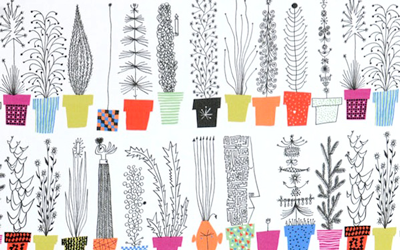
- almedahls
- 1846年設立のテキスタイルメーカー。創業160年の老舗でスウェーデンを代表するブランドです。スウェーデンの伝統手工芸(ヘムスロイド)を感じさせるクラシックなデザインから色彩豊かな斬新大胆なモダンデザインまで豊富なバリエーションがありますが、1950年から70年の優れたデザイナー達の作品の評価が高いです。現在はテキスタイル以外にキッチン用品、衣服なども手掛けており、世界各国で人気を集めています。
- almedahls / アルメダールス
-
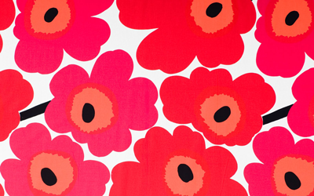
- MARIMEKKO
- 1951年設立のテキスタイルメーカー、マイヤ・イソラが発表した「ウニッコ」は斬新な色彩とデザインで1960年代にブームをつくり、北欧モダン黄金期の代表的作品とされています。北欧の自然をモチーフとした大胆なパターン柄を特徴とし、現在は世界中に多くのファンをもつブランドとなりました。
- MARIMEKKO / マリメッコ
-
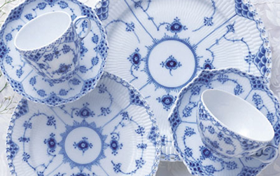
- ROYAL COPENHAGEN
- 1775年設立の陶磁器メーカー、デンマーク王室御用達として創設され王立製陶所として歩みを始めました。ブランドロゴには王室ゆかりの王冠が配置され、傑作して名高いフローラ・ダニカ（Flora Danica）は今も王室晩餐会で使用されております。1970年からジョージ・ジェンセン（Georg Jensen）、ホルムガード（Holmegard）、グラスワークス（GLASSWORKS）などのブランドを買収、1997年にはスウェーデンの老舗コスタ・ボダ
（Kosta Boda）、オレフォス・グラスブリュック（Orrefors Glasbruk）を傘下に収めロイヤル・スカンジナビアという北欧を代表する巨大グループ企業に成長しています。
- ROYAL COPENHAGEN / ロイヤルコペンハーゲン
-
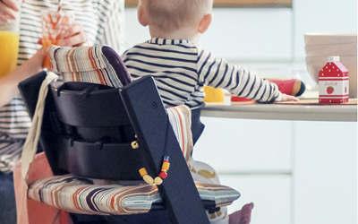
- STOKKE
- 1932年設立の家具メーカー、ピーター・オブスヴィック（Peter Opsvik）によって1972年に発表された「トリップ・トラップ」は子どもの成長に合わせて使える椅子として世界中で親しまれています。
- STOKKE / ストッケ
-
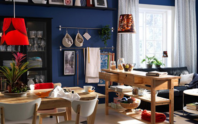
- IKEA
- 1943年設立の家具メーカー、高いデザイン性と機能性にあわせて低価格を実現させた北欧を代表する優良企業。ノックダウンの組立式を徹底追及し、余分なサービスを省くことでコストの低下を実現、低価格家具の大量生産という他のスウェーデンの家具メーカーとか異なるマーケティングをみせています。
- IKEA / イケア
-
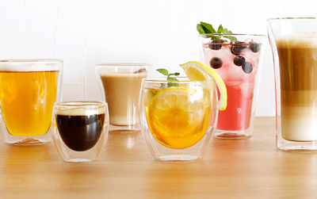
- bodum
- 1944年設立のキッチンウェアーメーカー、ピーター・ボダム（Peter Bodum）が始めた家庭雑貨卸しが最初の業務でした、戦後復興にあわせて1950年代から始めたデザインを重視したオリジナル商品開発で生まれたコーヒーメーカー、サントス（Santos）が好評でヨーロッパに知られるブランドとなります。1974年より本社をスイスへ移転、2003年にはスウェーデンの文房具メーカー、オーダニング＆レダ（ORDNING & REDA）を傘下に収めるなど事業を拡大、現在は世界55カ国で販売される人気ブランドです。
- bodum / ボダム
-
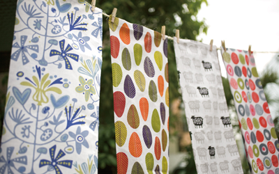
- KLIPPAN
- 1879年設立のテキスタイルメーカー、社名は発祥の地スウェーデン南西部クリッパン村が由来となってます。創業当初より自社工場で紡績から染色、織りまでの製造過程を行うなど品質管理に優れたメーカーでした。最近はウール以外にコットン、リネンを素材とした製品も多く、ヘラジカやヒツジなどをモチーフとした明るく可愛い絵柄のデザインが人気です。
- KLIPPAN / クリッパン
-
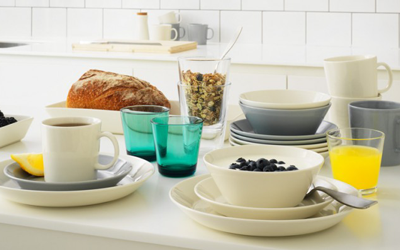
- iittala
- 1881年設立のガラス器メーカー、当初はフィンランド国内にガラス職人が少なかったこともあり、クリスタル製品の先進国である隣国スウェーデンの影響を受けていました。しかし1930年に入り多くのデザイナーに影響を与えた歴史的名作がアイノ、アルヴァのアアルト夫妻らによって生み出され大いに注目を浴びることになります。さらに1950年代にフィンランドのモダンデザインの旗手カイ・フランクによって発表された「カルティオ」は先鋭的で洗練されたデザインで世界中で注目を浴び北欧を代表するブランドを確固たるものとしました。現在イッタラグループは、アラビア、ハックマン、イッタラ、ボダノバ、ホガナス・ケラミク、ロールストランド、ホヤング・ポラリスなどを傘下におさめる大グループとなっています。
- iittala / イッタラ
-
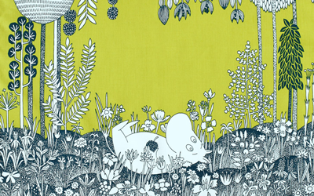
- MOOMIN
- スウェーデン系フィンランド人の作家であり画家としても知られるトーベ・ヤンソン（Tove Jansson 1914-2001)が、1944年にスウェーデン語の雑誌「ガルム」で挿絵としてムーミントロールを登場させたのが「ムーミン」の始まりです。戦争の影 響を受けてか、当時描かれたムーミントロールは「やせっぽちで怒った顔が多い」と言われています。
- MOOMIN / ムーミン
-
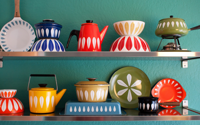
- Cathrine Holm
- 1907年設立のホーローメーカー、1950年から70年代までグレタ・プリッツ・キッテルセン（Grete Prytz kittelsen）によってデザインされたロータスシリーズはカラフルな色彩で大きな反響をよびブランドの代名詞ともなっています。
-
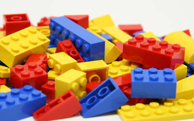
- LEGO
- 1932年設立の玩具メーカー、大工であったオーレ・キアク・クリスチャンセン（Ole Kirk Christiansen）の木工品工房をスタートとしており、LEGOはデンマーク語で「よく遊べ」を意味する「leg godt」を由来としています。戦後よりプラスティック製品の製造を始め、1949年に現在のレゴブロックの原型とも言えるオートマティック バイディング ブリック（Automatic Binding Bricks）が発売。現在では世界130カ国以上で販売されている人気玩具で、子供だけではなく大人からも支持を受けているブランドです。
- LEGO / レゴ
-
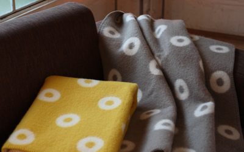
- RØROS-TWEED
- 1939年設立のブランケットメーカー、鉱山街として世界遺産に登録されているロロスに会社はあります。ノルウェー産の厳選された羊毛を使い、軽量で丈夫なうえ保温効果に優れており、製品はノルウェーグッドデザイン賞を何度も受賞したノルウェーを代表するブランドです。
- RØROS-TWEED / ロロスツイード
-
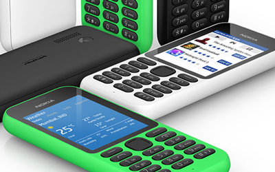
- NOKIA
- 1865年設立の電気通信機器メーカー、もともとは製紙業を行っており社名の由来も製材パルプを製造するのに適した川が流れる「ノキア」に工場が建設されたことにあります。1967年より本格的に電信電気分野への進出を始めたノキアは、フィンランド政府が第二次世界大戦後の復興の中で、石油ショックなどを景気にハイテク立国への政策を打ち出したのもあり、徐々に業務の比重をエレクトロニクス技術開発へと移していきます。ソ連解体と国内のバブル崩壊での不況で経営は大きく傾きましたが、モバイル業務に特化することで復活、モビリティにおける世界的リーダー企業となりました。
- NOKIA / ノキア
-
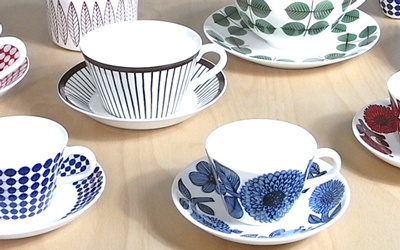
- GUSTAVSBERG
- 1825年設立の陶器メーカー、著名なデザイナーによる人気シリーズが数多いスウェーデンを代表するブランドです。1917年からアートディレクターとしてヴィルヘルム・コーゲが在籍したころの製品は人気が高く、現在復刻盤として再販されています。
- GUSTAVSBERG / グスタフスベリ
-
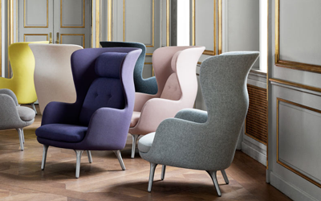
- FRIT HANSEN
- 1872年設立の家具メーカー、曲げ木細工を得意とした職人フリッツ・ハンセンの家具工房がスタートです。1930代よりアルネ・ヤコブセン、ハンス・J・ウェグナー、ポール・ケアホルムなど、デンマークのデザイン史を作った優れたデザイナーたちと協力し、「ANT」「SERIES7」をはじめ多くの優れた名作家具を生み出したデンマークを代表するブランドです。
- FRIT HANSEN / フリッツ・ハンセン